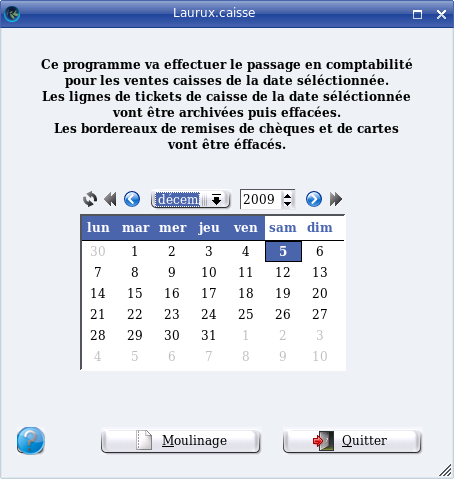

~ Laurux.Pos ~

~ Laurux.Pos ~ |
|
|
|
Moulinage des tickets de caisse.

Comme indiqué sur la copie d'écran, ce programme va
effectuer le passage des ventes caisses en comptabilité pour la journée
sélectionnée et va mettre à jour la table des bons pour les clients en
compte ayant eu des bons de caisse.
NB : Avant de faire le moulinage
le programme va controler qu'il n'existe pas de tickets à une date
antérieure à celle qui est séléctionnée. Si c'est le cas alors un
message d'information préviendra l'utilisateur. Le moulinage à la date
séléctionnée ne pourra donc pas se faire si des tickets
antérieurs existent dans la table had hoc.
A l'issue du moulinage, les lignes de tickets de
caisse seront archivées puis effacées de la table des tickets. Les
bordereaux de remise de chèques et de cartes seront aussi effacées.
Pour que cette opération puisse être lancée il
faudra que l'impression des bandes Z soient faite sur chaque caisse et
que toutes les caisses déclarées dans la table des caisses soient
déconnectées.
Un contrôle est fait sur l'état de chaque caisse avant le moulinage.
On aura une écriture de vente journalière en
comptabilité qui sera la centralisation des tickets de caisse pour
l'ensemble des caisses. Le journal des ventes utilisé sera celui qui
est déclaré dans les paramètres.
Il y aura également une génération d'écritures de
trésorerie pour les réglements par espèces, chèques et cartes.
Attention, ces écritures n'étant pas lettrées, il faudra proceder à un
lettrage manuel si on le souhaite.
NB: Il faut penser a renseigner
les comptes de virements internes dans les préférences. Le
moulinage ne pourra s'effectuer que si ces comptes sont completés.
NB: Les réglements hors vente
ne générent pas d'écritures de trésorerie. Il faudra donc les passer
manuellement en compta à partir de la bande Z.
Rappel : Les bandes Z doivent être archivées.
----------------------------------------------------------------------------------------------------------------------